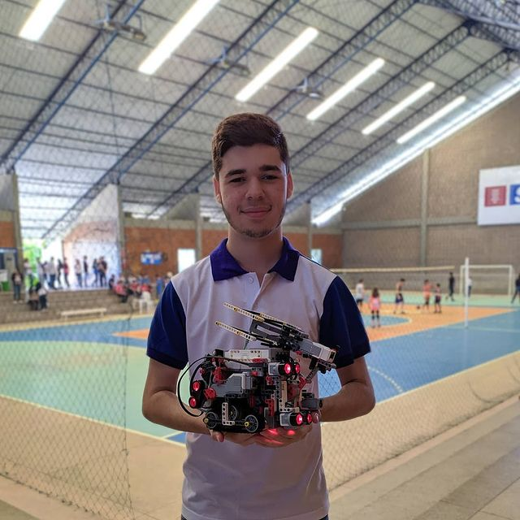

Como comecei no front-end
Iniciei com o desenvolvimento web com a necessidade de criar uma solução para um problema urbano, que era um dos desafios da first lego league, programa internacional de educação que participei em minha adolescência. Na época não sabia nada sobre como desenvolver um site, assim foi um grande desafio, eu sabia que não iria ser uma tarefa nada fácil mas encarei todos os problemas e criei meu primeiro site, capaz de solicitar serviços de emergência para idosos, como polícia, bombeiros e SAMU, com o objetivo de ter uma interface simples para os idosos, com informações médicas pessoais, para agilizar o trabalho dos profissionais e graça ao pré-cadastro o serviço ajuda na confirmação da veracidade da solicitação para os serviços de emergência, que sofrem com o problema de trotes, utilizando HTML5 e CSS3 criei interfaces de login, registro dos dados, e a página principal e com Javascript integrei uma ferramenta de geolocalização ao site, que enviaria a localização para o serviço de emergência, trabalhando junto com um colega que ficou responsável do back-end, conseguimos levar nosso projeto que foi visto como inovador que nós ajudou a alcançar a 7° posição na competição com diversas outras escolas de pernambuco.
Minhas Skills
-
Desenvolvimento Front-End
Desenvolvimento de websites, utilizando HTML5 e CSS3
-
Linguagens de programação

JavaScript, Python, Java
-
Edição de video + fotos

Premeire pro, adobe after effects
Projetos paralelos
-
Robótica
Participante da FLL(First Lego League) 2018
Evento internacional com diversos desafios, como a criação do robô, a sua programação e o core valeus que me ajudou a desenvolver habilidades interpessoais, as softskills assim aprimorando meu trabalho em equipe. Com o desafio do robô pude desenvolver a logica de programação e ter contato com diveras linguagens como Javascript e Scratch.Participante da OBR(Olimpíada Brasileira de Robótica)2019

Evento onde pude me aprimorar muito no trabalho em equipe e na programação, diferente da FLL o desafio do robô não era um trajeto pré planejado, ele tinha que se adaptar a pista, e seguir um percurso totalmente aleatório então criar um robô autônomo era necessário, o que demandou uma programação muito complexa, isso me levou a um novo estágio na criação de algoritmos
Formação
-
Análise e desenvolvimento de sistemas
Graduando análise e desenvolvimento de sistemas (encerramento previsto para 2023)
Cursos
-
Curso de Informática
-
Programador iniciante IGTI-Instituto de Gestão e Tecnologia da Informação
-
Robótica
-
HTML5 e CSS3 - Alura
Idiomas
-
Inglês - Intermediário
-
Português - Nativo